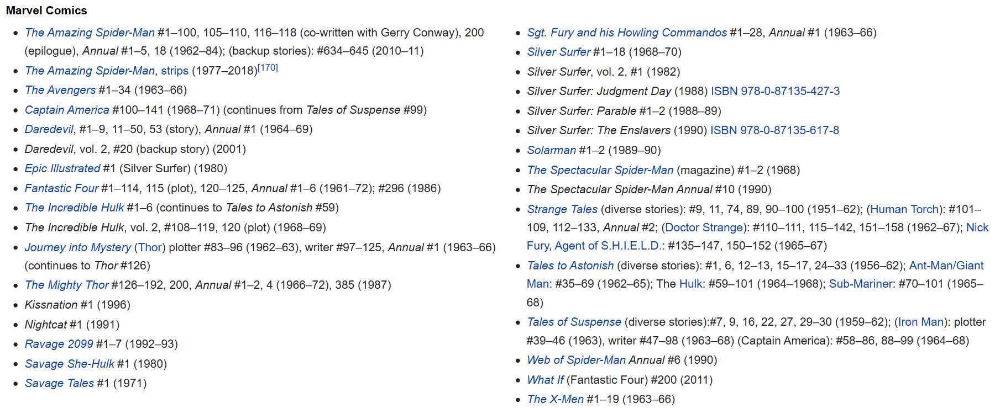
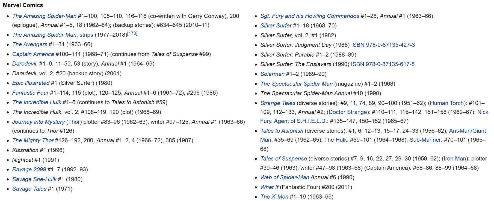

1922.12.28--2018.11.12
An American comic book writer, editor, publisher, and producer.
He rose through the ranks of a family-run business to become Marvel Comics' primary creative leader for two decades, leading its expansion from a small division of a publishing house to a multimedia corporation that dominated the comics industry.
 

Stan Lee is a veteran in the American comics industry. His heroic role is to accompany his intimate comrades who have grown up with countless Americans, including "X-Men", "Spider-Man", "Fantastic Four", "The Hulk", etc. His achievements have become an important part of American culture. Because he has brought countless business opportunities to the magic comic company, more than 90% of the company's well-known characters have been created by him. His comics have been in more than 75 countries around the world. Printed in different languages, over 20 billion copies. Stan Lee will introduce soap operas, humor, moral dilemmas and politics into comic works to achieve the "reality" he pursues. In the creation of comics, Stan Lee also likes to use everyday Stan Lee's heroes like ordinary people who have bad temper, vanity, and depression and greed when they are between each other - the three syllables that are not common in the language or Complex vocabulary such as polysyllabic to encourage children to learn new vocabulary. There will be quarrels, and the bills will be blamed like mortals. Their bodies are not iron-clad, and occasionally they will suffer from a small illness.
Although Marvel's copyright has been sold to a number of companies, only the "father of Marvel" Stan Lee can cross the universe and into the parallel world. He is one of the most important founders of the Marvel Kingdom and the "old urchin" in Marvel's film.
Web page designer: Vina Pan
Email me: panwenlan@stu.vma.edu.cn
Click here to get more information about the author! Reference page